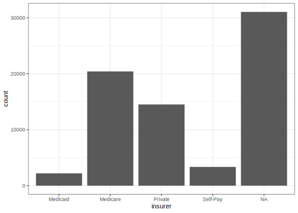

library(readmission)
readmission
#> # A tibble: 71,515 × 12
#> readmitted race sex age admission_source blood_glucose insurer duration
#> <fct> <fct> <fct> <fct> <fct> <fct> <fct> <dbl>
#> 1 Yes Afric… Male [60-… Referral <NA> <NA> 7
#> 2 No Cauca… Fema… [50-… Emergency Normal Private 4
#> 3 Yes Cauca… Fema… [70-… Referral <NA> Medica… 5
#> 4 No Cauca… Fema… [80-… Referral <NA> Private 5
#> 5 No Cauca… Fema… [70-… Referral <NA> <NA> 4
#> 6 No Cauca… Male [50-… Emergency Very High <NA> 2
#> 7 Yes Afric… Fema… [70-… Referral <NA> Private 3
#> 8 No Cauca… Fema… [20-… Emergency <NA> <NA> 1
#> 9 No Cauca… Male [60-… Other <NA> <NA> 12
#> 10 No Cauca… Fema… [80-… Referral <NA> Medica… 1
#> # ℹ 71,505 more rows
#> # ℹ 4 more variables: n_previous_visits <dbl>, n_diagnoses <dbl>,
#> # n_procedures <dbl>, n_medications <dbl>Fair prediction of hospital readmission: a machine learning fairness case study
yardstick
fairness
tuning
classification
With information on a diabetes patient’s stay at a hospital like demographics, diagnostic results, payment, and medications, a hospital can train a machine learning model to predict reasonably well whether a patient will be readmitted within 30 days. What harms to patients could result from using such a model, though?
In 2019, Obermeyer et al. (2019) published an analysis of predictions from a machine learning model that health care providers use to allocate resources. The model’s outputs are used to recommend a patient for high-risk care management programs:
These programs seek to improve the care of patients with complex health needs by providing additional resources, including greater attention from trained providers, to help ensure that care is well coordinated. Most health systems use these programs as the cornerstone of population health management efforts, and they are widely considered effective at improving outcomes and satisfaction while reducing costs. […] Because the programs are themselves expensive—with costs going toward teams of dedicated nurses, extra primary care appointment slots, and other scarce resources—health systems rely extensively on algorithms to identify patients who will benefit the most.
They argue in their analysis that the model in question exhibits substantial racial bias, where “Black patients assigned the same level of risk by the algorithm are sicker than White patients.” In practice, this resulted in the reduction of “the number of Black patients identified for extra care by more than half.”
This article will demonstrate a fairness-oriented workflow for training a machine learning model to identify high-risk patients. Throughout the model development process, we’ll consider the social impacts that different modeling decisions may have when such a model is deployed in context.
Setup
The data we’ll use in this analysis is a publicly available database containing information on 71,515 hospital stays from diabetes patients. The data comes from a study by Strack et al. (2014), where the authors model the effectiveness of a particular lab test in predicting readmission. A version of that data is available in the readmission R package:
The first variable in this data, readmitted, gives whether the patient was readmitted within 30 days of discharge. We’ll use this variable as a proxy for “unmet need for additional care,” in that readmission within one month indicates that the patient may have benefited from additional attention during their hospital stay; if a machine learning model consistently identifies lesser need (via prediction of non-readmission) in one subgroup than another, the subgroup allocated lesser need will go without care they’d benefit from. We’d like to train a model that is both fair with regard to how it treats race groups and is as performant as possible. The tidymodels framework provides the tools needed to identify such disparities.
Loading needed packages:
library(tidymodels)
library(baguette)
library(desirability2)
library(GGally)Exploratory Analysis
Let’s start off our analysis with some explanatory summarization and plotting. First, taking a look at our outcome variable:
readmission %>%
count(readmitted)
#> # A tibble: 2 × 2
#> readmitted n
#> <fct> <int>
#> 1 Yes 6293
#> 2 No 652228.8% of patients were readmitted within 30 days after being discharged from the hospital. This is an example of a modeling problem with a class imbalance, where one value of the outcome variable is much more common than another. Now, taking a look at the counts of those in each protected class:
readmission %>%
count(race)
#> # A tibble: 6 × 2
#> race n
#> <fct> <int>
#> 1 African American 12887
#> 2 Asian 497
#> 3 Caucasian 53491
#> 4 Hispanic 1517
#> 5 Other 1177
#> 6 Unknown 1946
Note
We’ll refer to the race groups in this data by their actual value (e.g. "Caucasian" rather than Caucasian) so as to not take for granted the choices that the dataset authors made in choosing these categorizations. Racial categorizations are not stable across time and place—as you read on, consider how a change in the categories used in data collection might affect this analysis (Omi and Winant 1994).
A vast majority of patients are labeled "Caucasian" (74.8%) or "African American" (18%). The counts for the remaining racial categorizations are quite a bit smaller, and when we split the data up into resamples, those counts will reduce even further. As a result, the variability associated with the estimates "Asian", "Hispanic", "Other", and "Unknown" will be larger than those for "African American" and "Causasian". As an example:
readmission %>%
# randomly split into groups
mutate(., group = sample(1:10, nrow(.), replace = TRUE)) %>%
group_by(race, group) %>%
# compute proportion readmitted by race + random `group`ing
summarize(prop = mean(readmitted == "Yes"), n = n()) %>%
# compute variation in the proportion by race.
# note that, by default, the output from above is grouped by race only.
summarize(mean = mean(prop), sd = sd(prop), n = sum(n))
#> # A tibble: 6 × 4
#> race mean sd n
#> <fct> <dbl> <dbl> <int>
#> 1 African American 0.0849 0.00713 12887
#> 2 Asian 0.0825 0.0295 497
#> 3 Caucasian 0.0900 0.00369 53491
#> 4 Hispanic 0.0805 0.0285 1517
#> 5 Other 0.0680 0.0265 1177
#> 6 Unknown 0.0720 0.0178 1946The standard deviations sd are much larger for groups with a smaller number of observations n, even if the average proportions mean are similar. This variation will affect our analysis downstream in that fairness metrics measure variation across groups; the noise associated with proportions calculated for race groups with fewer values may overwhelm the signal associated with actual disparities in care for those groups.
We have several options when considering how to address this:
- Remove rows arising from infrequent classes. In this example, this would mean removing all rows with
racevalues other than"Caucasian"or"African American". This is the approach taken by other public analyses of these data, including the original study that this data arose from. An analysis resulting from this approach would ignore any disparities in care forracegroups other than"Caucasian"or"African American". - Construct custom fairness metrics that address the increased variability associated with smaller counts. We could scale the variability of the estimates for each
racegroup before calculating fairness metrics. - Bin the values for infrequent classes. This would entail collapsing values of
raceother than"Caucasian"and"African American"into one factor level. This approach is somewhat of a hybrid of the two approaches above; we lose some granularity in information regarding care forracegroups other than"Caucasian"and"African American", but reduce the variability associated with the estimates for those groups in the process.
For this analysis, we’ll go with the last option.
Note
While we won’t construct custom fairness metrics in this example, you can do so using the new_groupwise_metric() function in yardstick.
Recoding that data column:
readmission_collapsed <-
readmission %>%
mutate(
race = case_when(
!(race %in% c("Caucasian", "African American")) ~ "Other",
.default = race
),
race = factor(race)
)
readmission_collapsed %>%
count(race)
#> # A tibble: 3 × 2
#> race n
#> <fct> <int>
#> 1 African American 12887
#> 2 Caucasian 53491
#> 3 Other 5137Plotting distributions of remaining predictors:
readmission_collapsed %>%
ggplot(aes(x = age)) +
geom_bar() +
facet_grid(rows = vars(admission_source))
Most patients in this data are in their 60s and 70s. Emergencies account for most admissions in this data, though many others are from referrals or other sources.
readmission_collapsed %>%
ggplot(aes(x = insurer)) +
geom_bar()
While payment information on most patients is missing, most patients in this data are covered under Medicare.
Tip
The payment method is one way in which societal unfairness may be reflected in the source data besides the variables on protected groups themselves. Medicaid coverage is only available to people below a certain income, and many self-pay patients do not have medical insurance because they cannot afford it. Relatedly, poverty rates differ drastically among racial groups in the U.S.
readmission_collapsed %>%
pivot_longer(starts_with("n_")) %>%
ggplot(aes(x = value)) +
geom_histogram() +
facet_wrap(vars(name), scales = "free_x")
For many patients, this was their first inpatient visit to this hospital system. During their stay, many patients receive 10-20 medications and experience several procedures.
With a sense for the distributions of variables in this dataset, we can move on to splitting data up for modeling.
Resampling Data
First, splitting data into training and testing:
set.seed(1)
readmission_splits <- initial_split(readmission_collapsed, strata = readmitted)
readmission_train <- training(readmission_splits)
readmission_test <- testing(readmission_splits)
Note
We’ve set strata = readmitted here to stratify our sample by the outcome variable in order to address the class imbalance. To learn more about class imbalances and stratification, see the “Common Methods for Splitting Data” chapter of Tidy Modeling with R (Kuhn and Silge 2022).
We’ll set the 17,879-row readmission_test test set to the side for the remainder of the analysis until we compute a final estimate of our performance on the chosen model. Splitting the 53,636 rows of the training data into 10 resamples:
readmission_folds <- vfold_cv(readmission_train, strata = readmitted)
readmission_folds
#> # 10-fold cross-validation using stratification
#> # A tibble: 10 × 2
#> splits id
#> <list> <chr>
#> 1 <split [48272/5364]> Fold01
#> 2 <split [48272/5364]> Fold02
#> 3 <split [48272/5364]> Fold03
#> 4 <split [48272/5364]> Fold04
#> 5 <split [48272/5364]> Fold05
#> 6 <split [48272/5364]> Fold06
#> 7 <split [48273/5363]> Fold07
#> 8 <split [48273/5363]> Fold08
#> 9 <split [48273/5363]> Fold09
#> 10 <split [48273/5363]> Fold10Each split contains an analysis and assessment set: one for model fitting and the other for evaluation. Averaging performance estimates across resamples will give us a sense for how well the model performs on data it hasn’t yet seen.
Training and Evaluating Models
We’ll define a diverse set of models and pre-processing strategies and then evaluate them against our resamples.
Model Workflows
We’ll first define a basic recipe that first sets a factor level for missing values and then centers and scales numeric data:
recipe_basic <-
recipe(readmitted ~ ., data = readmission) %>%
step_unknown(all_nominal_predictors()) %>%
step_YeoJohnson(all_numeric_predictors()) %>%
step_normalize(all_numeric_predictors()) %>%
step_dummy(all_nominal_predictors())The other preprocessor that we’ll try encodes the age as a numeric variable rather than the bins as in the source data:
# e.g. "[10-20]" -> 15
age_bin_to_midpoint <- function(age_bin) {
# ensure factors are treated as their label
age <- as.character(age_bin)
# take the second character, e.g. "[10-20]" -> "1"
age <- substr(age, 2, 2)
# convert to numeric, e.g. "1" -> 1
age <- as.numeric(age)
# scale to bin's midpoint, e.g. 1 -> 10 + 5 -> 15
age * 10 + 5
}
recipe_age <-
recipe(readmitted ~ ., data = readmission) %>%
step_mutate(age_num = age_bin_to_midpoint(age)) %>%
step_rm(age) %>%
step_unknown(all_nominal_predictors()) %>%
step_YeoJohnson(all_numeric_predictors()) %>%
step_normalize(all_numeric_predictors()) %>%
step_dummy(all_nominal_predictors())Both of these preprocessors will be combined with one of three models. Logistic regressions, XGBoost, and bagged neural networks make a diverse set of assumptions about the underlying data generating process. Defining model specifications for each:
spec_lr <-
logistic_reg("classification")
spec_bt <-
boost_tree("classification", mtry = tune(), learn_rate = tune(), trees = 500)
spec_nn <-
bag_mlp("classification", hidden_units = tune(), penalty = tune())We now combine each unique combination of recipe and preprocessor in a workflow set:
wflow_set <-
workflow_set(
preproc = list(basic = recipe_basic, age = recipe_age),
models = list(lr = spec_lr, bt = spec_bt, nn = spec_nn)
)
wflow_set
#> # A workflow set/tibble: 6 × 4
#> wflow_id info option result
#> <chr> <list> <list> <list>
#> 1 basic_lr <tibble [1 × 4]> <opts[0]> <list [0]>
#> 2 basic_bt <tibble [1 × 4]> <opts[0]> <list [0]>
#> 3 basic_nn <tibble [1 × 4]> <opts[0]> <list [0]>
#> 4 age_lr <tibble [1 × 4]> <opts[0]> <list [0]>
#> 5 age_bt <tibble [1 × 4]> <opts[0]> <list [0]>
#> 6 age_nn <tibble [1 × 4]> <opts[0]> <list [0]>Each workflow in the workflow set is now ready to be evaluated. We now need to decide how to best evaluate these modeling workflows, though.
Metrics
The metrics with which we choose to evaluate our models are the core of our fairness analysis. In addition to the default metrics for classification in tune, accuracy() and roc_auc(), we’ll compute a set of fairness metrics: equal_opportunity(), equalized_odds(), and demographic_parity().
equal_opportunity(): Equal opportunity is satisfied when a model’s predictions have the same true positive and false negative rates across protected groups. In this example, a model satisfies equal opportunity if it correctly predicts readmission and incorrectly predicts non-readmission at the same rate acrossracegroups. In this case, the metric represents the interests of the patient; a patient would like to be just as likely to receive additional care resources as another if they are of equal need, and no more likely to go without unneeded care than another. Since this metric does not consider false positives, it notably does not penalize disparately providing additional care resources to a patient who may not need them.equalized_odds(): Equalized odds is satisfied when a model’s predictions have the same false positive, true positive, false negative, and true negative rates across protected groups. This definition is a special case of the one above, where there’s additionally a constraint placed on the false positive and true negative rates. In this example, a model satisfies equalized odds if it correctly predicts both readmission and non-readmission and incorrectly predicts readmission and non-readmission at the same rate acrossracegroups. Similar to equal opportunity, the stakeholders for the metric in this case can be generally understood to be those who are subject to the model’s predictions, except that this metric also aims to prevent disparately 1) providing additional care resources to those who may not need them and 2) identifying patients who do not need additional care resources correctly.demographic_parity(): Demographic parity is satisfied when a model’s predictions have the same predicted positive rate across groups. In this example, a model satisfies demographic parity if it predicts readmission at the same rate acrossracegroups. Note that this metric does not depend on the true outcome value,readmitted. The interests of a stakeholder who would like to see additional care resources provisioned at the same rate acrossracegroups, even if the actual need for those resources differs among groups, are represented by this metric. As demographic parity is broadly accepted as part of a legal definition of machine learning fairness, hospital systems might consider this metric to protect themselves legally (1607.4, n.d.).
For each of the above metrics, values closer to zero indicate that a model is more fair.
The above three metrics are defined specifically with fairness in mind. By another view of fairness, though, accuracy() and roc_auc() are also fairness metrics. Some stakeholders may believe that the most performant model regardless of group membership—i.e. the model that predicts readmission most accurately across groups—is the most fair model.
To evaluate each of these metrics against the specified workflows, we create a metric set like so:
m_set <-
metric_set(
accuracy,
roc_auc,
equal_opportunity(race),
equalized_odds(race),
demographic_parity(race)
)
m_set
#> A metric set, consisting of:
#> - `accuracy()`, a class metric | direction: maximize
#> - `roc_auc()`, a probability metric | direction: maximize
#> - `equal_opportunity(race)()`, a class metric | direction: minimize,
#> group-wise on: race
#> - `equalized_odds(race)()`, a class metric | direction: minimize,
#> group-wise on: race
#> - `demographic_parity(race)()`, a class metric | direction: minimize,
#> group-wise on: race
Note
The first two inputs, accuracy() and roc_auc(), are standard yardstick metrics. The latter three are also yardstick metrics like any other, though are created using the metric factories equal_opportunity(), equalized_odds(), and demographic_parity(). When passed a data-column, metric factories output yardstick metrics.
Evaluation
We can now evaluate the workflows we’ve defined against resamples using our metric set. The workflow_map() function will call tune_grid() on each workflow:
set.seed(1)
wflow_set_fit <-
workflow_map(
wflow_set,
verbose = TRUE,
seed = 1,
metrics = m_set,
resamples = readmission_folds
)A fitted workflow set looks just like the unfitted workflow set we saw previously, except that information on the tuning process is now stored in the option and result variables for each modeling workflow:
wflow_set_fit
#> # A workflow set/tibble: 6 × 4
#> wflow_id info option result
#> <chr> <list> <list> <list>
#> 1 basic_lr <tibble [1 × 4]> <opts[2]> <rsmp[+]>
#> 2 basic_bt <tibble [1 × 4]> <opts[2]> <tune[+]>
#> 3 basic_nn <tibble [1 × 4]> <opts[2]> <tune[+]>
#> 4 age_lr <tibble [1 × 4]> <opts[2]> <rsmp[+]>
#> 5 age_bt <tibble [1 × 4]> <opts[2]> <tune[+]>
#> 6 age_nn <tibble [1 × 4]> <opts[2]> <tune[+]>Model Selection
Now that we’ve evaluated a number of models with a variety of metrics, we can explore the results to determine our optimal model. Beginning with a quick exploratory plot of the distributions of our metrics:
wflow_set_fit %>%
collect_metrics() %>%
pivot_wider(
id_cols = c(wflow_id, .config),
names_from = .metric,
values_from = mean
) %>%
select(-c(wflow_id, .config)) %>%
ggpairs() +
theme(axis.text.x = element_text(angle = 45, vjust = .8, hjust = .9))
The fairness metrics demographic_parity(), equal_opportunity(), and equalized_odds() all take values very close to zero for many models. Also, the metric values are highly correlated with each other, including correlations between fairness metrics and the more general-purpose performance metrics. That is, the most performant models also seem to be among the most fair.
More concretely, we can rank the model configurations to examine only the most performant models:
rank_results(wflow_set_fit, rank_metric = "roc_auc") %>%
filter(.metric == "roc_auc")
#> # A tibble: 42 × 9
#> wflow_id .config .metric mean std_err n preprocessor model rank
#> <chr> <chr> <chr> <dbl> <dbl> <int> <chr> <chr> <int>
#> 1 age_bt Preprocessor1_… roc_auc 0.605 0.00424 10 recipe boos… 1
#> 2 basic_bt Preprocessor1_… roc_auc 0.605 0.00423 10 recipe boos… 2
#> 3 age_bt Preprocessor1_… roc_auc 0.604 0.00378 10 recipe boos… 3
#> 4 age_bt Preprocessor1_… roc_auc 0.603 0.00421 10 recipe boos… 4
#> 5 basic_bt Preprocessor1_… roc_auc 0.603 0.00410 10 recipe boos… 5
#> 6 basic_bt Preprocessor1_… roc_auc 0.603 0.00436 10 recipe boos… 6
#> 7 age_bt Preprocessor1_… roc_auc 0.602 0.00372 10 recipe boos… 7
#> 8 basic_nn Preprocessor1_… roc_auc 0.602 0.00403 10 recipe bag_… 8
#> 9 age_nn Preprocessor1_… roc_auc 0.600 0.00431 10 recipe bag_… 9
#> 10 age_nn Preprocessor1_… roc_auc 0.600 0.00412 10 recipe bag_… 10
#> # ℹ 32 more rowsAlmost all of the most performant model configurations arise from the boosted tree modeling workflow. Let’s examine the results for specifically the modeling workflow that encodes age as a number more thoroughly:
autoplot(wflow_set_fit, id = "age_bt")
The learning rate learn_rate seems to have a more pronounced effect on the results metrics than the number of randomly selected predictors mtry. As before, we see that the most performant models with respect to roc_auc() also tend to be the most fair according to our fairness metrics. Further, the values of each of the fairness metrics plotted above seem highly correlated.
From the perspective of a practitioner hoping to satisfy various stakeholders, the fact that these metrics are highly correlated makes the model selection process much easier. We can choose one fairness metric that we’d like to optimize for, and likely end up with a near-optimal configuration for the other metrics as a byproduct.
Note
In machine learning fairness, “impossibility theorems” show that fairness definitions “are not mathematically or morally compatible in general” (Mitchell et al. 2021). More concretely, unless we live in a world with no inequality, there is no way to satisfy many definitions of fairness at once. However, recent research emphasizes that near-fairness among more limited sets of metrics, like the three we’ve used here, is both possible and relevant (Bell et al. 2023).
To choose a model that performs well both with respect to a typical performance metric like roc_auc() and the fairness metrics we’ve chosen, we will make use of desirability functions, which allow us to optimize based on multiple metrics at once.
best_params <-
# extract the tuning results for the boosted tree model
extract_workflow_set_result(wflow_set_fit, "age_bt") %>%
# collect the metrics associated with it
collect_metrics() %>%
# pivot the metrics so that each is in a column
pivot_wider(
id_cols = c(mtry, learn_rate),
names_from = .metric,
values_from = mean
) %>%
mutate(
# higher roc values are better; detect max and min from the data
d_roc = d_max(roc_auc, use_data = TRUE),
# lower equalized odds are better; detect max and min from the data
d_e_odds = d_min(equalized_odds, use_data = TRUE),
# compute overall desirability based on d_roc and d_e_odds
d_overall = d_overall(across(starts_with("d_")))
) %>%
# pick the model with the highest desirability value
slice_max(d_overall)The result is a tibble giving the parameter values that resulted in the best model:
best_params
#> # A tibble: 1 × 10
#> mtry learn_rate accuracy demographic_parity equal_opportunity equalized_odds
#> <int> <dbl> <dbl> <dbl> <dbl> <dbl>
#> 1 7 0.00456 0.912 0 0 0
#> # ℹ 4 more variables: roc_auc <dbl>, d_roc <dbl>, d_e_odds <dbl>,
#> # d_overall <dbl>We can use that tibble to finalize a workflow that we’ll use to generate our final model fit:
final_model_config <-
extract_workflow(wflow_set_fit, "age_bt") %>%
finalize_workflow(best_params)Finally, generating our final model fit:
final_model <-
last_fit(final_model_config, readmission_splits, metrics = m_set)We can see the metrics associated with the final fit using collect_metrics(), just as with a tuning result:
collect_metrics(final_model)
#> # A tibble: 5 × 5
#> .metric .estimator .estimate .by .config
#> <chr> <chr> <dbl> <chr> <chr>
#> 1 accuracy binary 0.912 <NA> Preprocessor1_Model1
#> 2 equal_opportunity binary 0 race Preprocessor1_Model1
#> 3 equalized_odds binary 0 race Preprocessor1_Model1
#> 4 demographic_parity binary 0 race Preprocessor1_Model1
#> 5 roc_auc binary 0.602 <NA> Preprocessor1_Model1The model we’ve selected has near-fairness with respect to the set of metrics we’ve chosen here. The accuracy of the model is 91.16%, quite similar to the accuracy that would result if the model just always predicted a patient would not readmit (91.2%). The roc_auc() value 0.602 indicates that the model indeed correctly predicts readmission in some cases, though still has a lot of room for improvement. A further analysis of these models might measure performance using a metric that specifically evaluates predictions on observations from the minority class—as in, patients that did actually readmit—like sens().
Extracting the model fit from the last_fit object:
final_model_fit <- extract_workflow(final_model)The final_model_fit object is now ready to predict on new data! Models generated with tidymodels are easily versioned, deployed, and monitored using the vetiver framework; learn more about the framework on the vetiver website.
In this article, we’ve demonstrated a fairness-oriented modeling analysis. Modeling with fairness in mind is not simply a numerical optimization problem, but a holistic process of examining the moral meanings of fairness in our problem context and how they are represented—or not represented—by various mathematical notions of fairness.
While this analysis allowed us to train models that are near-fair with respect to a limited set of fairness metrics, it leaves many questions to be answered about the impacts of using such a model. Among other things:
- We’ve only evaluated the fairness of the model with
racein mind. We also have information on the patient’ssex. Could this model behave unfairly with respect to the patient’ssex? How about with respect to the intersections ofraceandsex? A growing body of research shows us that black women experience pronounced discrimination as patients (Johnson et al. 2019; Okoro, Hillman, and Cernasev 2020; Gopal et al. 2021). - The categorizations of
raceandsexthat we have access to are coarse. Race/ethnicity and sex/gender are richly and diversely experienced, and the limited set of categories that patients are presented with (or unknowingly assigned to) in healthcare contexts are only a proxy for how a patient may experience them. - We’ve used readmission as a proxy for need for additional care. What factors might influence whether a patient willingly readmits? Or is admitted to the hospital in the first place? Note, especially, the disproportionate financial burden of healthcare for poorer patients.
- We don’t know how the predictions resulting from this model will be used by practitioners or trusted by patients. The outputs of the model, of course, should be evaluated in conjunction with other evidence collected by a healthcare team throughout a patient’s stay. Knowing this, though, will the model’s outputs be differently interpreted for different groups in the patient population? For example, would a positive prediction of readmission be considered more seriously as evidence for needed additional care for a white man than for others? Further, given historical exploitation and unethical practice, would protected groups believe that algorithmic recommendation for additional care is likely discriminatory and mistrust the recommendations offered to them? (See Rajkomar et al. 2018.)
Machine learning models can both have significant positive impacts on our lives and at the same time cause significant harms. Given the tremendous reach of these models in our society, efforts to include fairness as a criteria for evaluating machine learning models are as necessary as ever.
Session information
#> ─ Session info ─────────────────────────────────────────────────────
#> version R version 4.5.1 (2025-06-13)
#> language (EN)
#> date 2025-10-21
#> pandoc 3.6.3
#> quarto 1.8.25
#>
#> ─ Packages ─────────────────────────────────────────────────────────
#> package version date (UTC) source
#> baguette 1.1.0 2025-01-28 CRAN (R 4.5.0)
#> broom 1.0.9 2025-07-28 CRAN (R 4.5.0)
#> desirability2 0.2.0 2025-08-22 CRAN (R 4.5.0)
#> dials 1.4.2 2025-09-04 CRAN (R 4.5.0)
#> dplyr 1.1.4 2023-11-17 CRAN (R 4.5.0)
#> GGally 2.4.0 2025-08-23 CRAN (R 4.5.0)
#> ggplot2 4.0.0 2025-09-11 CRAN (R 4.5.0)
#> infer 1.0.9 2025-06-26 CRAN (R 4.5.0)
#> parsnip 1.3.3 2025-08-31 CRAN (R 4.5.0)
#> purrr 1.1.0 2025-07-10 CRAN (R 4.5.0)
#> readmission 0.1.0 2023-12-07 CRAN (R 4.5.0)
#> recipes 1.3.1 2025-05-21 CRAN (R 4.5.0)
#> rlang 1.1.6 2025-04-11 CRAN (R 4.5.0)
#> rsample 1.3.1 2025-07-29 CRAN (R 4.5.0)
#> tibble 3.3.0 2025-06-08 CRAN (R 4.5.0)
#> tidymodels 1.4.1 2025-09-08 CRAN (R 4.5.0)
#> tune 2.0.1 2025-10-17 CRAN (R 4.5.0)
#> workflows 1.3.0 2025-08-27 CRAN (R 4.5.0)
#> yardstick 1.3.2 2025-01-22 CRAN (R 4.5.0)
#>
#> ────────────────────────────────────────────────────────────────────References
1607.4, 29 CFR §. n.d. “Information on Impact.”
Bell, Andrew, Lucius Bynum, Nazarii Drushchak, Tetiana Zakharchenko, Lucas Rosenblatt, and Julia Stoyanovich. 2023. “The Possibility of Fairness: Revisiting the Impossibility Theorem in Practice.” In Proceedings of the 2023 ACM Conference on Fairness, Accountability, and Transparency, 400–422. FAccT ’23. New York, NY, USA: Association for Computing Machinery. https://doi.org/10.1145/3593013.3594007.
Gopal, Dipesh P, Ula Chetty, Patrick O’Donnell, Camille Gajria, and Jodie Blackadder-Weinstein. 2021. “Implicit Bias in Healthcare: Clinical Practice, Research and Decision Making.” Future Healthcare Journal 8 (1): 40.
Johnson, Jasmine D, Ifeyinwa V Asiodu, Christine P McKenzie, Christine Tucker, Kristin P Tully, Katherine Bryant, Sarah Verbiest, and Alison M Stuebe. 2019. “Racial and Ethnic Inequities in Postpartum Pain Evaluation and Management.” Obstetrics & Gynecology 134 (6): 1155–62.
Kuhn, Max, and Julia Silge. 2022. Tidy Modeling with r. "O’Reilly Media, Inc.".
Mitchell, Shira, Eric Potash, Solon Barocas, Alexander D’Amour, and Kristian Lum. 2021. “Algorithmic Fairness: Choices, Assumptions, and Definitions.” Annual Review of Statistics and Its Application 8 (1): 141–63. https://doi.org/10.1146/annurev-statistics-042720-125902.
Obermeyer, Ziad, Brian Powers, Christine Vogeli, and Sendhil Mullainathan. 2019. “Dissecting Racial Bias in an Algorithm Used to Manage the Health of Populations.” Science 366 (6464): 447–53. https://doi.org/10.1126/science.aax2342.
Okoro, Olihe N, Lisa A Hillman, and Alina Cernasev. 2020. “‘We Get Double Slammed!’: Healthcare Experiences of Perceived Discrimination Among Low-Income African-American Women.” Women’s Health 16: 1745506520953348.
Omi, Michael, and Howard Winant. 1994. Racial Formation in the United States. Second. Routledge.
Rajkomar, Alvin, Michaela Hardt, Michael D Howell, Greg Corrado, and Marshall H Chin. 2018. “Ensuring Fairness in Machine Learning to Advance Health Equity.” Annals of Internal Medicine 169 (12): 866–72.
Strack, Beata, Jonathan P DeShazo, Chris Gennings, Juan L Olmo, Sebastian Ventura, Krzysztof J Cios, John N Clore, et al. 2014. “Impact of HbA1c Measurement on Hospital Readmission Rates: Analysis of 70,000 Clinical Database Patient Records.” BioMed Research International 2014.